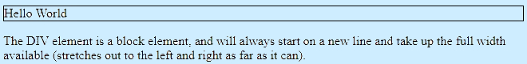
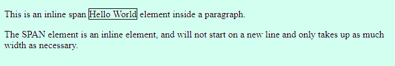

El doctype es una etiqueta que define el tipo de documento.
el doctype en HTML5 es:
<!DOCTYPE html>
en cambio en XHTML es mas complicado ya que la declaracion se tiene que definir en DTD (Document Type Definition) por ejemplo,
<!DOCTYPE html PUBLIC "-//W3C//DTD XHTML 1.1//EN" "http://www.w3.org/TR/xhtml11/DTD/xhtml11.dtd">
Se tiene que indicar dentro de head con el etiqueta <html lang="en">.
Sirve para describir el contenido de la pagina web o mejor conocidos como metadatos, va ubicada dentro del head, por ejemplo podemos describir el contenido de la web, el idioma de la web, decir quien es el autor...
<DOCTYPE html>
<html>
<head>
<meta charset="UTF-8">
<meta name="description" content="Free Web tutorials">
<meta name="keywords" content="HTML, CSS, JavaScript">
<meta name="author" content="Taimour Mahroof">
<meta name="viewport" content="width=device-width, initial-scale=1.0">
</head>
<body>
Para enlazar archivos ".js" externos alojados por un tercero en HTML, es decir un documento JavaScript, se usa la etiqueta <src>.
Ejemplo:
<!DOCTYPE html>
<head>
</head>
<body>
<script src="./script.js"></script>
</body>
</html>
Para enlazar archivos CSS en HTML se utiliza el etiqueta <link>
Ejemplo:
<!DOCTYPE html>
<head>
<link href="styles/style.css" rel="stylesheet" type="text/css">
<title>Ejemplo de etiqueta de script Src</title>
</head>
<body>
</body>
</html>
Las etiquetas de tipo bloque siempre:
1.Comienzan en una nueva línea.
2.Ocupan todo el ancho disponible (se extiende hacia la izquierda y hacia la derecha tanto como puede).
3.Tienen un margen superior e inferior, mientras que un elemento en línea no lo tiene.
Ejemplo de etiqueta de tipo bloque seria la etiqueta <div>:
<!DOCTYPE html>
<html>
<body>
<div style="border: 1px solid black">Hello World</div>
<p>The DIV element is a block element, and will always start on a new line and take up the full width available (stretches out to the left and right as far as it can).</p>
</body>
</html>

En cambio las etiquetas de tipo inline:
1.No comienzan en una nueva línea.
2.Solo ocupan tanto ancho como sea necesario.
3.No tienen margen superior y inferior.
Ejemplo de etiqueta de tipo inline seria la etiqueta <span>:
<!DOCTYPE html>
<html>
<body>
<p>This is an inline span <span style="border: 1px solid black">Hello World</span> element inside a paragraph.</p>
<p>The SPAN element is an inline element, and will not start on a new line and only takes up as much width as necessary.</p>
</body>
</html>

Se haria de la siguiente forma:
<h3>Autor: Alberto Jimenez<span id="info">.</span></h3>
<script>
function Aparecer() {
document.getElementById("info").innerHTML = ", titulo de la obra: La Sombra Oscura, genero de la obra: Novela policíaca ";
}
function Desaparecer() {
document.getElementById("info").innerHTML = ".";
}
</script>
<button type="button" onclick="Aparecer()">Mas información</button>
<button type="button" onclick="Desaparecer()">Solo me interesa el autor</button>
creamos un header o un parrafo al cual le pondremos un punto al final que estara con <span> y le ponemos un id dentro del span, tambien creamos dos botones, y dos funciones (dentro de script), en las funciones tenemos que usar el <getElementById("")>, y dentro de las comillas ponemos el nombre del id que pusimos anteriormente, despues escribimos un innerHTML, que sirve para substituir texto, pondremos un igual unas comillas y el mensaje dentro, en la segunda funcion en el mensaje ponemos un ".".
La etiqueta HTML <canvas> se utiliza para dibujar gráficos, sobre la marcha, mediante secuencias de comandos (generalmente JavaScript). Canvas tiene varios métodos para dibujar trazados, cuadros, círculos, texto y agregar imágenes. Ejemplo:
Los atributos role permiten al creador de una página añadir información a sus documentos HTML que luego puede ser extraída automáticamente por una máquina para obtener información sobre el propósito de cada elemento de la página. Las personas ciegas y con otros tipos de discapacidad utilizan dispositivos y navegadores especiales. Si una página utiliza los atributos "role" para describir el propósito de cada elemento, la navegación de esas personas será mucho más agradable, ya que su navegador especial es capaz de "entender" cómo está creada la página y puede leer los contenidos al usuario de manera mucho más lógica.